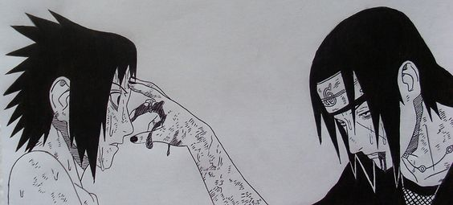
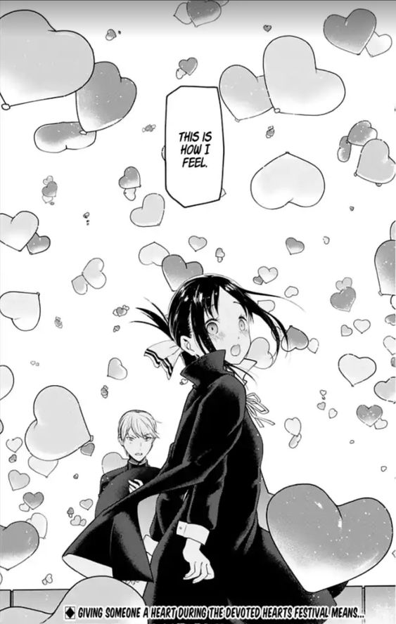
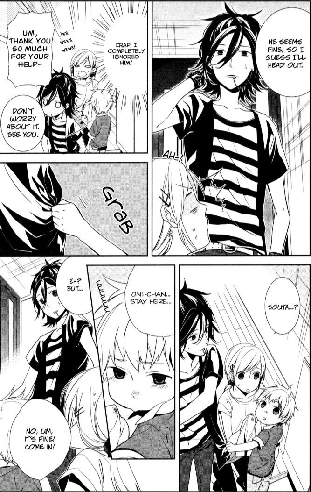
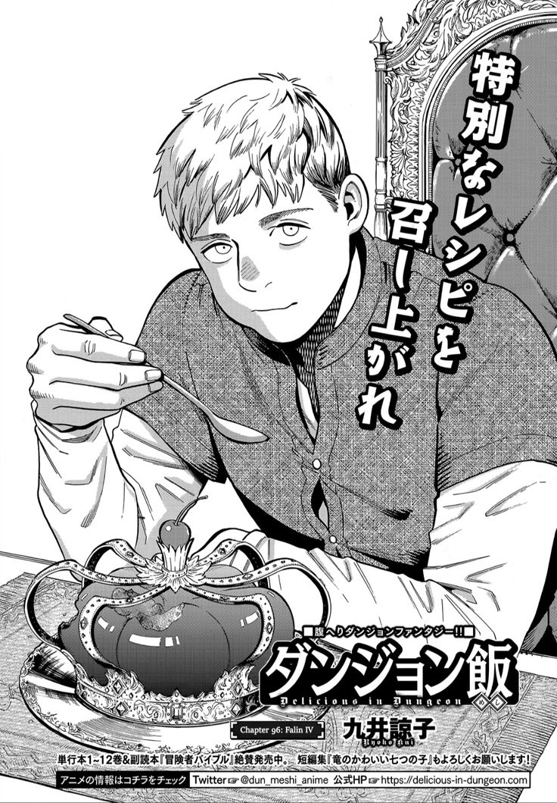
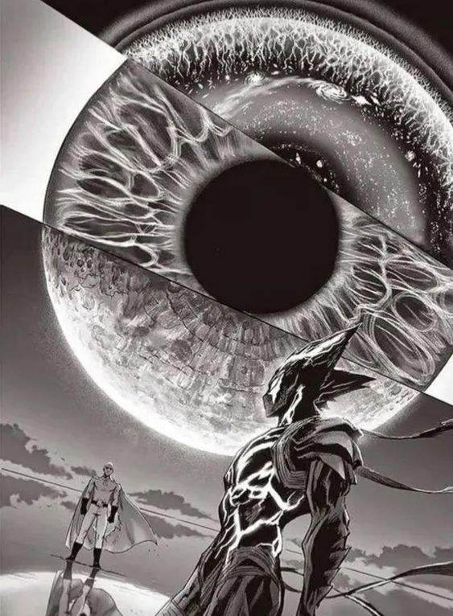
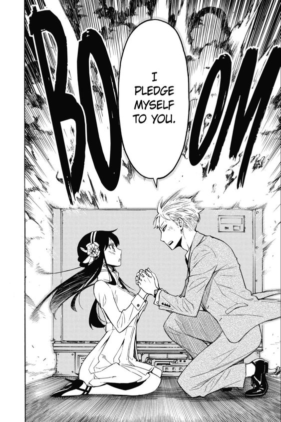
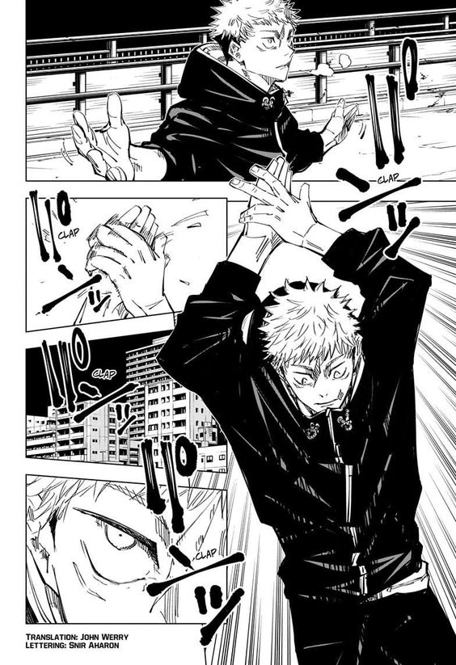

O que são Mangás?
Mangás são quadrinhos japoneses que abrangem uma ampla variedade de gêneros, como ação, romance, fantasia, e comédia. Publicados em preto e branco, eles são lidos da direita para a esquerda. Mangás podem ser voltados para diferentes públicos, desde crianças até adultos, e muitos deles servem de base para adaptações em anime. São uma parte importante da cultura pop japonesa, conhecidos por sua arte expressiva e histórias cativantes.
Mangás de romance
Mangás de romance exploram histórias centradas em relacionamentos amorosos e emocionais entre os personagens. Eles abrangem uma ampla gama de subgêneros, desde comédias leves e românticas até dramas profundos e complexos. Esses mangás se concentram em desenvolver a química entre os protagonistas, explorar suas emoções e lidar com os altos e baixos dos relacionamentos. A narrativa pode envolver temas como amizade, desafios pessoais, e crescimento emocional, proporcionando uma experiência envolvente e muitas vezes nostálgica para os leitores.
Kaguya-sama LOVE IS WAR
é um mangá de comédia romântica que segue Kaguya Shinomiya e Miyuki Shirogane, dois estudantes brilhantes e orgulhosos. Ambos se apaixonam, mas, em vez de confessar seus sentimentos, competem para fazer o outro declarar primeiro
Horimiya
é um mangá que explora a amizade e o romance entre Kyoko Hori, uma estudante popular, e Izumi Miyamura, seu colega de classe com uma personalidade diferente. A história revela segredos e o crescimento dos personagens em meio a comédia e romance.
Mangás de comédia
Mangás de comédia são dedicados a gerar risadas e diversão através de humor. Eles exploram situações engraçadas, piadas e mal-entendidos, frequentemente com personagens carismáticos e cenários absurdos. Esses mangás podem variar de comédias leves e cotidianas a paródias e sátiras, oferecendo uma experiência descontraída e divertida para os leitores. Além de entreter, eles frequentemente exploram aspectos da vida cotidiana com um toque cômico.
Dungeon Meshi
é um mangá de fantasia e aventura que segue um grupo de aventureiros que explora masmorras e cozinha os monstros que enfrentam para sobreviver. A série mistura elementos de culinária com ação e humor, oferecendo uma visão única sobre o gênero de fantasia.
One Punch Man
é um mangá de ação e comédia que segue Saitama, um herói que derrota qualquer inimigo com um único soco. Entediado com a falta de desafios e reconhecimento, ele busca um adversário digno enquanto lida com a vida cotidiana e os absurdos do mundo dos heróis.
Spy x Family
é um mangá que combina ação e comédia, acompanhando a vida de um espião, uma assassina e uma telepata que se casam e formam uma família falsa. Juntos, enfrentam desafios enquanto tentam manter seus segredos e cumprir suas missões. A personagem que mais chama atenção é sua filha Anya
Mangás de ação
Mangás de ação são caracterizados por suas sequências de combate vibrantes e cenários dinâmicos. Eles giram em torno de heróis ou protagonistas que enfrentam inimigos poderosos e desafios intensos, muitas vezes envolvendo batalhas épicas, perseguições e confrontos emocionantes. Esses mangás frequentemente exploram temas de coragem, força e estratégia, com personagens que desenvolvem habilidades e técnicas ao longo da história. A narrativa é repleta de adrenalina e tensão, mantendo os leitores engajados com uma mistura de ação constante e desenvolvimento dramático.
Naruto
é um mangá de ação e aventura sobre Naruto Uzumaki, um jovem ninja que quer se tornar o Hokage, o líder de sua vila. Ele enfrenta desafios e inimigos, buscando reconhecimento e proteção para seus amigos, enquanto explora temas de amizade, perseverança e crescimento pessoal.
Jujutsu Kaisen
é um mangá de ação e sobrenatural que acompanha Yuji Itadori, um estudante que, após engolir um objeto amaldiçoado, se junta a feiticeiros para lutar contra maldições e proteger o mundo. A série é conhecida por suas batalhas intensas e uma trama cheia de mistérios.
One piece
é um mangá de aventura sobre Monkey D. Luffy, um pirata em busca do tesouro "One Piece" para se tornar o Rei dos Piratas. Com sua tripulação, ele explora o mundo, enfrentando inimigos enquanto busca cumprir seu sonho. A série é conhecida por sua rica narrativa e personagens cativantes.